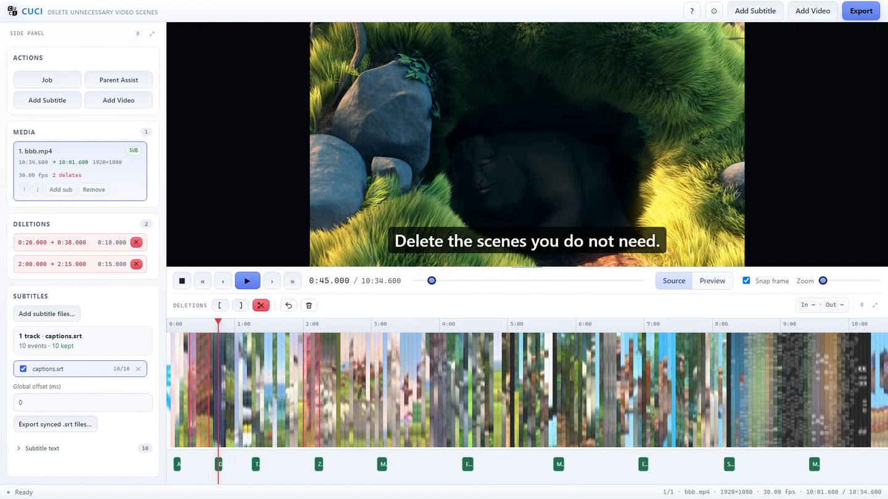
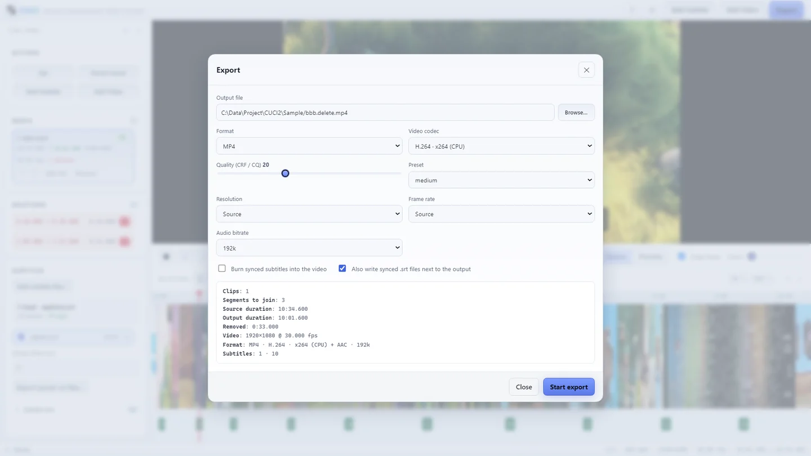
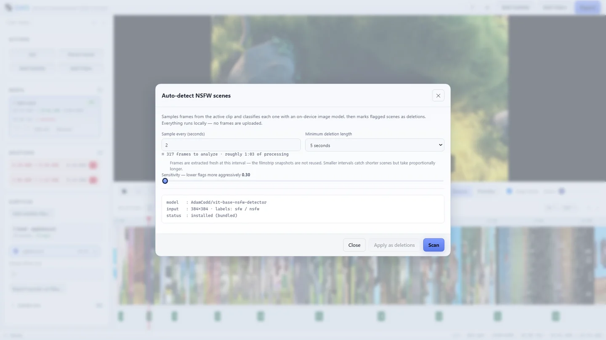
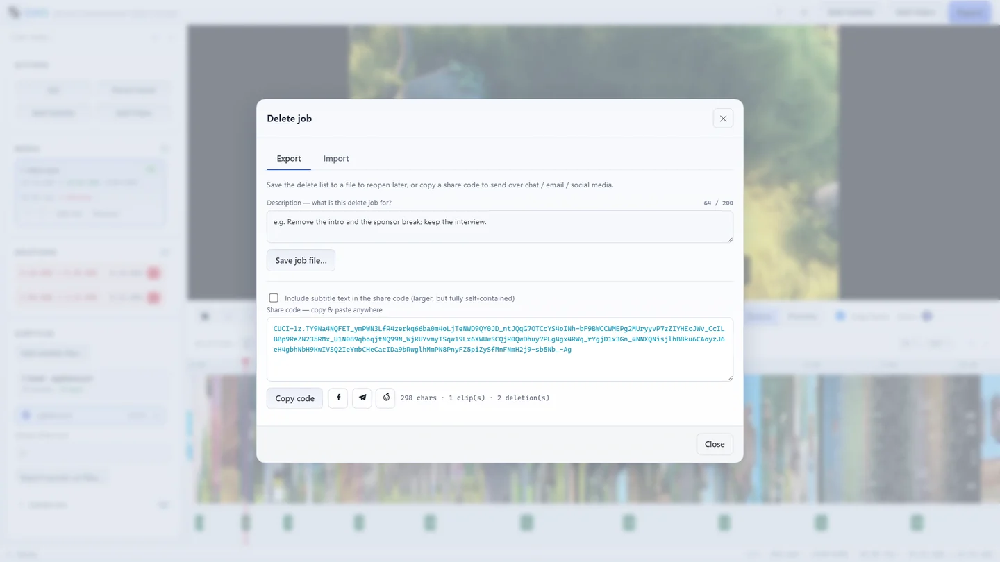

Mark it, and it's gone
Drag a range, set in/out with a keystroke, or right-click the timeline for a delete menu. Add as many cuts per clip as you like and fine-tune each edge by dragging it.
CUCI is a desktop editor for one job: cutting out the parts you don't want, joining what's left, and keeping the subtitles in sync. Frame-accurate, offline, and fast — no timeline of a thousand panels.

Everything here exists to remove time from a video and put the rest back together cleanly. Nothing else gets in the way.
Drag a range, set in/out with a keystroke, or right-click the timeline for a delete menu. Add as many cuts per clip as you like and fine-tune each edge by dragging it.
Join several clips into one file. Different resolutions, frame rates or missing audio are normalised automatically, so a phone clip and a screen capture sit side by side.
Load several .srt or .vtt tracks per clip. Timings are rewritten to
match your deletes — captions spanning a cut are trimmed, captions inside one are dropped.
An optional scan that flags scenes a parent may want to remove and marks them as deletes in one pass. Frames are analysed locally — nothing is sent anywhere.
Save your delete list as a tiny job file, or copy a one-line code into a chat. Whoever has the same source video gets your exact cut — plus your note on what and why.
Codec your player can't decode? CUCI builds a lightweight proxy so scrubbing and playback still work, then exports from the untouched original.
MP4, MOV, MKV, WebM, AVI, WMV, FLV or MPEG-TS with H.264/H.265 on CPU or GPU, plus quality and resolution presets, live progress and a Cancel that actually stops ffmpeg.
Undo and redo across everything, source and result preview modes, snapping to frames, and playback that stays in sync across your cuts.
Pin, auto-hide or detach the side panel and control center into their own windows — the timeline can live on a second monitor while the preview stays full size.
Drop in one file or several. CUCI probes duration, frame rate and audio so the timeline is already frame-accurate.
Drag on the timeline, or press I / O at the edges and hit Del. Each removed range is painted in red; drag an edge to adjust it.
Pick a container and encoder, confirm the summary, and export only the audio and video you kept. Subtitles are rewritten to the new timeline.
Dark or light, the whole app is one window: player, timeline, and a sidebar that holds what you need right now.



An optional on-device classifier samples frames from a clip and marks scenes that may be worth removing. It never plays adult content, never labels you, and never phones home.
H.264 and H.265 on CPU or GPU, with per-format legal encoders and audio defaults.
SubRip and WebVTT, several tracks per clip, remapped or burned in, exported per track.
Anything ffmpeg can decode; a proxy is generated for codecs Chromium can't preview.
14 UI languages including right-to-left Arabic, with system detection and a live switch.
CUCI runs entirely on your device. It has no account, no ads, no purchases and no telemetry. Your videos, subtitles and exported files are read and written only where you point the app; preferences and cached thumbnails stay inside your Windows user profile.
Network access happens only when you start the optional Parent Assist scan, which downloads an AI model file once and then analyses frames locally — no video, frame, filename or personal data is uploaded. Links to GitHub, Telegram, WhatsApp, Reddit and the Microsoft Store open in your browser only after you click them.
We collect no personal data, so there is no separate privacy policy page: this statement is the complete policy.
.srt/.vtt tracks and every timing
is rewritten for the new timeline: captions after a cut move earlier, captions across a cut are
trimmed, captions inside a removed scene are dropped. Burn in or export the corrected file.Install in a few seconds and try it on a clip you already have — nothing to sign up for, nothing to configure.